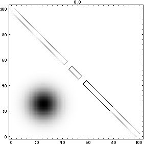
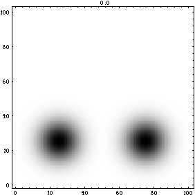

[ An efficient method for solving parabolic partial differential equations is implemented in Mathematica using InterCall and an external C routine. As an application, the two-dimensional time-dependent Schroedinger's equation is solved for various initial conditions and potential functions.]
Four different numerical experiments are given: a double slit experiment; tunneling (barrier penetration); scattering of a particle from a cylindrical potential barrier; and interaction of two wave-packets
 A particle (wave function) passes through a double slit showing wave-like interference patterns.
(This is the first frame of a 96992 byte mpg movie. Click on the graph to download the movie)
 Two particles (wave functions) collide with each other, showing wave-like interference during the collision.
(This is the first frame of a 65999 byte mpg movie. Click on the graph to download the movie)